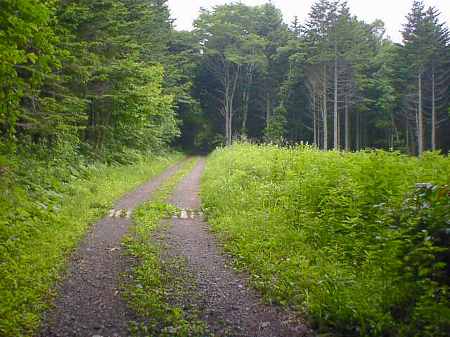

７月０３日
６時３０分起床。天気予報を見たら曇り時々雨だった。北見では大雨洪水警報が出ているらしい。朝食をとり部屋に戻ってどうしようと考え
ていたらテレビでヤヌスの鏡がやっていたのでつい見てしまった。８時３０分から９時３０分。その後雨は降っていないようだったので北広島
に向けて出発した。１０時３０分頃到着してあてもなくふらふらしていたらレクリエーションの森というのができていたので行ってみたらひどい
目にあってしまった。自転車を押して入っていったのだが途中から獣道になったりついに雨が降ってきたりなど。雨が降ってきたのでとりあ
えず駅前の東急ストアに逃げ込み本屋でジャンプを立ち読みをしながら雨宿りをした。ジャンプを読み尽くす頃には雨はやみ、またふらふら
と自転車をこぎだした。学校の裏山みたいなところで読み物をしたり、最近できた喫茶店でのんびり過ごし札幌に戻った。
札幌に戻ってきたのは１６時３０分頃で去年同様ベガスベガスで勝負することにした。結構粘ったが結果は良くなかった。買っても負けて
も今日の晩御飯は札幌ビール園で食べようと思っていたので気を取り直して自転車で向かっていると急に夕立が降ってきてずぶ濡れになっ
てしまった。すぐにやんだけどちょうど外に出ているときに降ってくるなんてかなりついてない。とりあえず直行は断念していったんホテルに
戻り、風呂に入り、また降ってくるといやなので地下鉄で行くことにした。最寄の駅から１０分くらい歩いてやっとたどり着き、時間を見ると２０
時４０分、やっと食べられると思っていたら・・・ラストオーダーは２０時だった・・・。あの時雨さえ降らなければ余裕で間に合ったのに。放心
状態でポールタウンまで歩き（３０分くらいかかった）、マクドナルドでビックマックセットを食べて帰った。マクドナルドも閉店間際だった。
ジンギスカンは明日の昼食にしよう！という決意のもとふとんに入る。

レクレーションの森の結構奥のほう。どこを見渡してもこんな感じ。
戻る